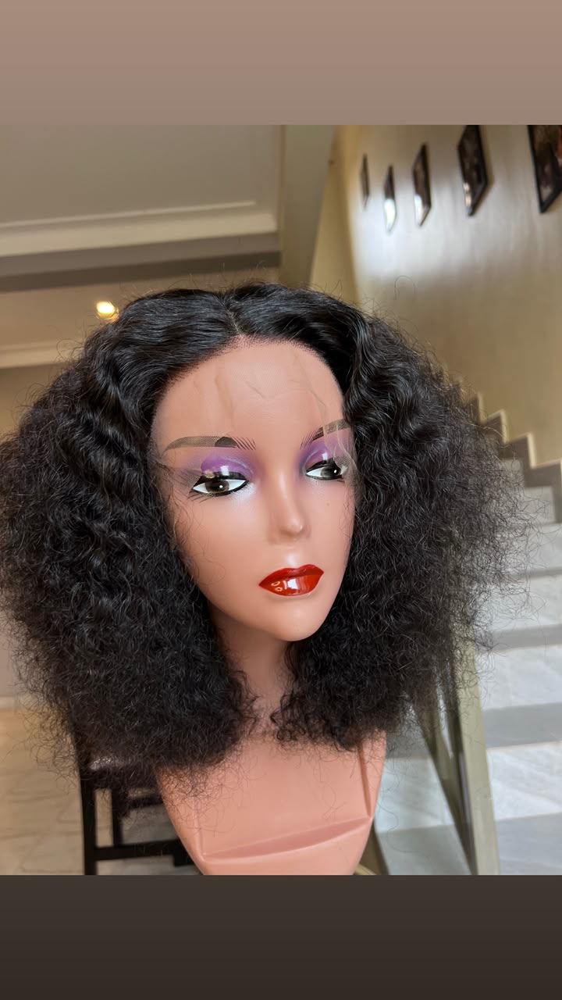

Hair · Signature edit
The Amara Coil

Price on request
A softly rounded, textured look with natural volume and an expressive silhouette.
Enquire on WhatsAppHair · Signature edit

Price on request
A softly rounded, textured look with natural volume and an expressive silhouette.
Enquire on WhatsApp